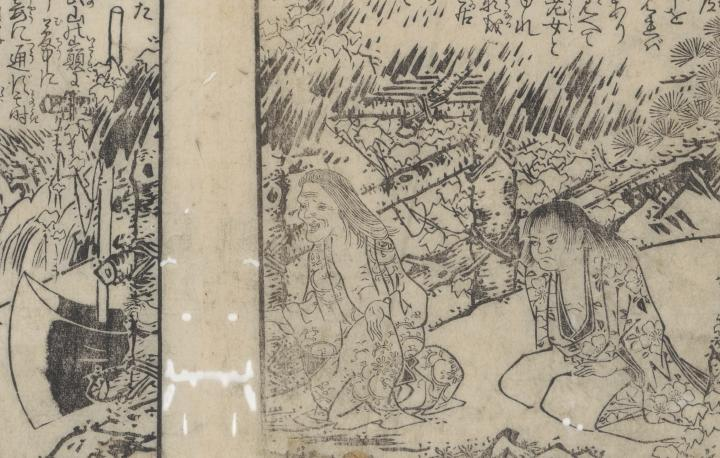

頼光一行の前に現れた、谷あいの萱屋に棲む山姥と禿頭の怪童。山姥の側には大きなまさかりが立てかけてある。
著作者：岡田玉山／出典：親書誌：U426_nichibunken_0432：繪本頼光一代記／日付：2016／資源識別子：U426_nichibunken_0432_0002_0000
Copyright (c)2010- International Research Center for Japanese Studies, Kyoto, Japan. All rights reserved.